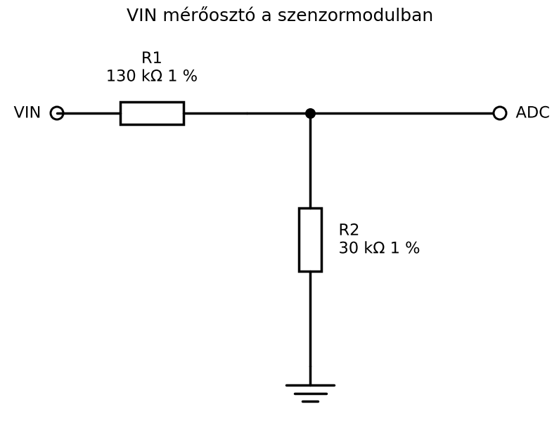
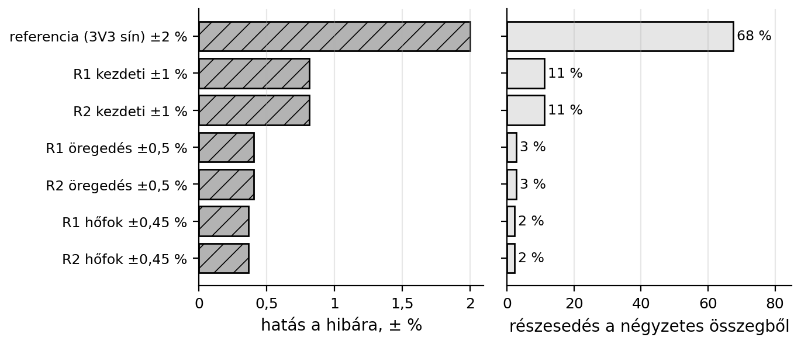
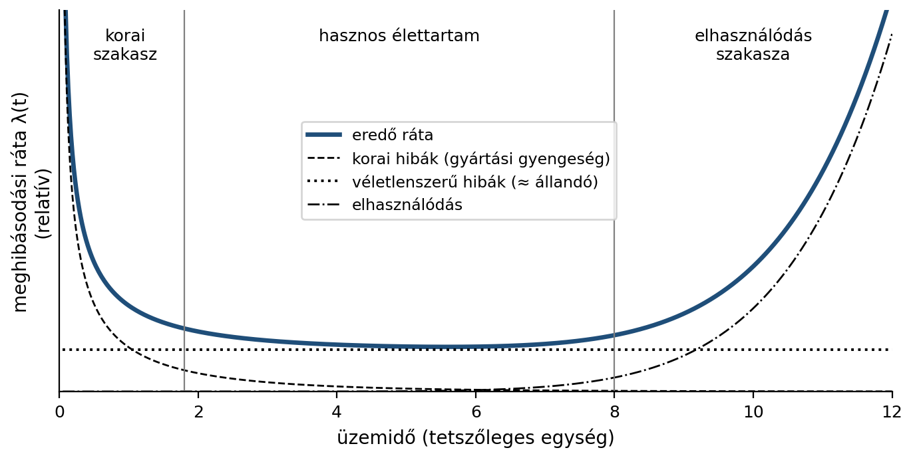
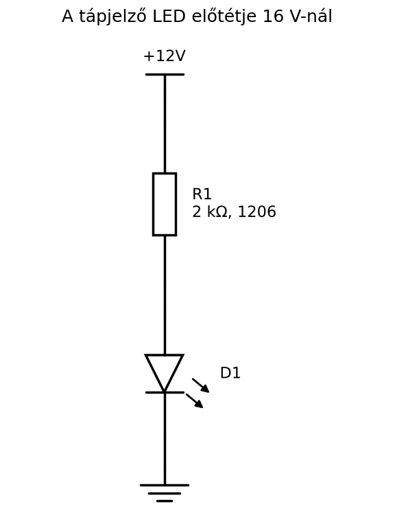

Az adatkártyán most már a garantált számok szerepelnek. De egy valódi darab nem a névleges érték, a hőmérséklet változik, az alkatrész öregszik, és néha túlfeszültség éri. Ez az alfejezet arról szól, hogyan hagyj tartalékot, és hogyan számold ki, elég-e. Az alfejezet végére:
Ami ehhez kell: Szuperpozíció és forrásátalakítás, Mérési hiba, bizonytalanság és jegyzőkönyv, E-sorok, tűrés és jelölések, A valós kondenzátor: ESR, ESL, önrezonancia, élettartam, Szűrőtervezés alapjai: rendűség, Butterworth és tűrés, A BJT működése, tartományai és munkapontja, Valós paraméterek: offset, zaj, sávszélesség, slew rate, stabilitás, Érzékelők illesztése és a jelút hibaköltségvetése és Az adatlap olvasása.
Az E-sorok, tűrés és jelölések alfejezetben E24-es értékekből megterveztük a bemeneti feszültség mérőosztóját: = 130 kΩ, = 30 kΩ, 1 %-os tűréssel, 16 V-nál 3,0 V kimenet. (A Feszültségosztó, áramosztó és a terhelés hatása 4,3 kΩ/1 kΩ-os osztója bevezető példa volt; a modulban ez a tervezett változat.) Tegyük fel, hogy valaki „jobb felbontásért” 120 kΩ-ot javasol -nek: a kimenet 16 V-nál 3,2 V, kisebb a 3,3 V-os ADC-referenciánál. Rendben van?
Nem. A referencia a 3,3 V-os sín, amely az XL3300 mintaadatlapja szerint (Az adatlap olvasása) 3,234 V is lehet, és az ellenállások sem pontosak. Hasonló kérdés: a 12 V-os sín tápjelző LED-jének előtétellenállása (2 kΩ) 16 V-nál majdnem a határáig melegedhet.
A derating (terhelhetőség-csökkentés) olyan, mint a híd megengedett terhelése: jóval kisebb, mint amennyinél leszakad, mert a híd öregszik, a rakomány nem pontosan ismert, és a teherautó nem finoman gurul rá. Az analógia ott sántít, hogy egy alkatrésznél a túlterhelés ritkán látványos: gyakran csak az élettartam rövidül.
A tűrésanalízis három módja úgy képzelhető el, mint több dobókocka összege. A legrosszabb eset azt kérdezi: mi van, ha mind a hatos (vagy mind az egyes)? A négyzetes összegzés azt használja ki, hogy ritkán esik minden a rossz irányba egyszerre. A Monte Carlo sokszor ténylegesen „dob”, és megnézi az eredmények eloszlását.

Az ADC-bemenet terhelését és a mintavevő kondenzátor beállását most elhanyagoljuk (az osztó 24,4 kΩ-os belső ellenállása miatt ezt a Mintavétel, kvantálás és ADC szerint külön ellenőrizni kell). A 30 V-os tesztimpulzus elleni védelem a Szintillesztés, bemenetvédelem és pergésmentesítés témája.
Definíció. A derating az a gyakorlat, hogy egy alkatrészt szándékosan a névleges (vagy adatlapi) határánál kisebb igénybevételre tervezünk:
Itt feszültség, áram, teljesítmény vagy hőmérséklet-különbség, az adott hőmérsékleten megengedett érték (az ellenállás teljesítménye például egy hőmérséklet felett csökken, lásd Teljesítmény, hőfoktényező, feszültségtűrés és típusok), a derating-tényező, dimenzió nélkül. Az a legrosszabb üzemi eset, nem a névleges.
Miért kell a tartalék? A darabok szórnak; az alkatrész öregszik; tranziensek jönnek, amelyeket nem mértél; a hőmérséklet gyorsítja a hibamechanizmusokat; és a számításban is lehet hiba.
Az irányelv táblázat formájú: alkatrésztípusonként a mennyiség és a megengedett arány. Az alábbi példa a könyv saját munkaszabálya – a valós arányok szervezeti vagy iparági irányelvből származnak (ellenőrizendő: a saját cég, megrendelő vagy iparág előírása):
| Alkatrész | Mennyiség | Példa-korlát |
|---|---|---|
| ellenállás | disszipáció a hőmérsékleten megengedetthez képest | 50 % |
| kerámia kondenzátor | feszültség a névlegeshez képest | 60 % |
| elektrolit kondenzátor | feszültség; hőmérséklet és hullámáram | 80 % |
| MOSFET, dióda | zárófeszültség (tranzienssel együtt) | 80 % |
| félvezető | záróréteg-hőmérséklet | legalább 25 K a alatt |
A kerámiánál a derating a DC-bias miatti kapacitásvesztést is mérsékli (Kondenzátorfajták és dielektrikumok); a tényleges kapacitást ettől még külön ki kell számolni.
Egy paraméter eltérése a névlegestől több forrásból áll össze:
Mi történik ezekkel a kapcsolás kimenetén? Ezt a három módszer válaszolja meg.
Definíció. A kimenet érzékenysége az paraméterre: , a parciális derivált, vagyis a meredekség úgy, hogy csak változik, minden más rögzített. A relatív érzékenység azt mondja meg, hogy 1 % változás -ben hány %-ot okoz -ban (dimenzió nélküli).
Deriválni nem kell tudnod: változtasd -et egy kicsit, és nézd meg, mennyit mozdult . Az osztónál , ahol . Rövid számolással és . A mi osztónknál , tehát : ha 1 %-kal nagyobb, a kimenet kb. 0,81 %-kal nő.
Definíció. A legrosszabb eset (worst-case analysis, WCA) a paraméterek tűrésmezején elérhető legkisebb és legnagyobb kimenet. Ha a kimenet minden paraméterben monoton, elég a szélső értékek összes kombinációját végigpróbálni ( paraméternél sarok). Kis eltéréseknél közelítőleg
ahol az -edik paraméter relatív tűrése. Szavakkal: minden hatás a legrosszabb irányba, és összeadódnak. Akkor érvényes, ha a kicsi (pár %), és a -k valódi határok.
Definíció. A négyzetes összegzés (root sum square, RSS) a független hatásokat négyzetesen adja össze:
Feltétele, hogy a források függetlenek és nagyjából a névleges köré szimmetrikusan szórnak. Ha a normális eloszlás ±3 szórásának felel meg, a kapott sáv a kimenet ±3 szórása; más eloszlásnál csak becslés. Nem garancia.
Definíció. A Monte Carlo-szimuláció véletlen paraméterkészleteket húz a feltételezett eloszlásokból, mindegyikre kiszámolja a kimenetet, és az eredmények eloszlásából olvas ki arányokat vagy percentiliseket (például: a darabok hány %-a esik határon kívül).
Gondolkodj előre: a Monte Carlo 20 000 mintájának legszélső értéke eléri-e a legrosszabb eset határát, ha hat független tűrésforrás van?
Nem: a hat forrás mindegyikének egyszerre a szélére kellene esnie, ez ritka. A 130 kΩ-os osztónál az eredmények (egyenletes eloszlás, 20 000 minta, mag: 65):
| Módszer | Alsó | Felső | Mit mond? |
|---|---|---|---|
| legrosszabb eset | 2,906 V | 3,096 V | ennél rosszabb nem lehet (ha a tűrések igazak) |
| RSS | 2,958 V | 3,042 V | független hatások „tipikus szélső” sávja |
| Monte Carlo | 2,922 V | 3,080 V | a húzott minták szélsői – az eloszlásfeltevéstől függenek |
Mikor melyiket használd? Ahol a túllépés károsodást vagy biztonsági gondot okoz (feszültség a bemeneten, hőmérséklet), legrosszabb esettel dönts. Ha egy nagy sorozatban a kihozatal (a határon belüli darabok aránya) a kérdés, és ismered az eloszlásokat, a Monte Carlo ad választ. Az RSS gyors becslés, és megmutatja a domináns hibaforrást.
Egy fontos kivétel a függetlenség alól: ha két ellenállás egy tokból vagy egy tételből származik, a hőfokfüggésük együtt jár. Az osztó arányát a tracking (a két érték együttfutása) nem változtatja: az illesztett pár hőfoktagja kiesik. Fordítva is igaz: ha a hatások egy irányba korreláltak, az RSS alábecsli a hibát.
Most a mért bemeneti feszültség hibáját nézzük: a mikrovezérlő a kódból alapján számol, és 3,3 V-os referenciát feltételez. A relatív hiba kis eltéréseknél .

A ±2 %-os referencia adja a négyzetes összeg 68 %-át. Pontosabb ellenállás itt keveset segít; a referenciát kell javítani (vagy a mérést kalibrálni, Érzékelők illesztése és a jelút hibaköltségvetése). Az eredő: legrosszabb esetben −5,0 … +5,3 %, RSS szerint ±2,4 %.
Továbbvitt eredmény. Minden alkatrésznél a legrosszabb üzemi igénybevételt az irányelv szerinti derating-határhoz mérjük (táblázatban), a pontosságot és a határsértést pedig ugyanarra a függvényre legrosszabb esettel, RSS-sel és Monte Carlóval vizsgáljuk; a domináns tagot az érzékenység mutatja meg. Ezt használja a Követelményektől a blokkdiagramig, a Szimuláció és ellenőrzés, a Tervezési átvizsgálás és átadás a NYÁK-tervezésnek, az 1. záróprojekt: védett tápegység 12 V-ról 5 V-ra és 3,3 V-ra és a 2. záróprojekt: érzékelő-illesztő és mérőlánc.
Definíció. A meghibásodási ráta annak mértéke, hogy a még működő darabok időegység alatt mekkora hányada hibásodik meg. Egysége 1/h; elterjedt egység a FIT (failures in time): 1 FIT = 1 hiba üzemórára.
Ha állandó, a még működők aránya exponenciálisan fogy (ahogy a kisülő kondenzátor feszültsége, RC és RL töltés–kisütés, időállandó):
a megbízhatóság (túlélési valószínűség), dimenzió nélkül; is dimenzió nélküli. Az MTBF (mean time between failures, két hiba közti átlagos idő) a ráta reciproka. Ha a készülék bármely alkatrészének hibája a készülék hibája (soros rendszer), a ráták összeadódnak: .
Az MTBF nem élettartam. Ha egy modul MTBF-je 500 év, az nem azt jelenti, hogy 500 évig működik, hanem azt, hogy sok darabból a hasznos élettartam alatt évente kb. 1/500 hibásodik meg.

A kádgörbe (bathtub curve) három összetevő összege: a korai hibák (gyártási gyengeségek; a gyártó vagy a bejáratás szűri), a véletlen hibák közel állandó rátája (erre érvényes az exponenciális képlet és a FIT) és az elhasználódás. Az ábra alakja jellegzetes, de nem minden alkatrészre igaz; a számok tetszőlegesek.
Sok kémiai és fizikai hibamechanizmus gyorsul a hőmérséklettel az Arrhenius-összefüggés szerint:
a gyorsítási tényező (dimenzió nélkül), az aktiválási energia (eV, mechanizmusfüggő feltevés), a Boltzmann-állandó (8,62·10⁻⁵ eV/K), a hőmérsékletek kelvinben. = 0,7 eV, 55 °C üzem és 125 °C teszt mellett : a tesztben eltelt 1 óra kb. 78 üzemórának felel meg – ha a feltevés igaz. Egy mechanizmusra becsült tényező más mechanizmusra nem vihető át.
Néhány alkatrész nem véletlenszerűen, hanem elhasználódással megy tönkre, és ezek szabják meg a készülék élettartamát:
| Alkatrész | Mi fogy | Mitől gyorsul |
|---|---|---|
| elektrolit kondenzátor | elektrolit (nő az ESR) | hőmérséklet, hullámáram (A valós kondenzátor: ESR, ESL, önrezonancia, élettartam) |
| relé, kapcsoló | érintkezők, mechanika | kapcsolásszám, induktív terhelés ívkisülése |
| optocsatoló | a LED fénye (csökken az áramátvitel) | LED-áram, hőmérséklet |
| ventilátor | csapágy | hőmérséklet, por |
| akkumulátor | kapacitás | töltési ciklus, hőmérséklet |
Formális megbízhatóságbecslő módszerek is vannak (például MIL-HDBK-217, IEC 61709; ellenőrizendő: a hatályos kiadás); eredményük erősen függ a feltett adatoktól, a könyv nem tárgyalja őket.
Továbbvitt eredmény. Az élettartamot jellemzően néhány elhasználódó alkatrész korlátozza (elektrolit kondenzátor, optocsatoló, ventilátor, relé), a hőmérséklet erősen gyorsítja; ezeket a terv átvizsgálásakor külön kell becsülni (Tervezési átvizsgálás és átadás a NYÁK-tervezésnek).
A) Legrosszabb eset kézzel. Mindkét ellenállás eltérése legfeljebb %. A kimenet akkor a legnagyobb, ha nagy ( kΩ) és kicsi ( kΩ):
A legkisebb: V. A 3,096 V a 3,234 V-os legkisebb referencia alatt marad, 138 mV tartalékkal. (Az E-sorok, tűrés és jelölések alfejezetben csak az 1 %-os kezdeti tűréssel számolt 2,95 … 3,05 V sáv most a hőfokkal és az öregedéssel kétszer olyan széles.) A 120 kΩ-os változatnál V: még a névleges 3,3 V-os referenciát is túllépi.
Józanész-ellenőrzés az érzékenységgel: %, azaz mV – egyezik a legrosszabb eset 95 mV-os fél sávjával.
RSS: %, vagyis ±41,5 mV.
B) Derating az előtéten (ugyanaz a döntés, mint a Teljesítmény, hőfoktényező, feszültségtűrés és típusok alfejezetben, most a táblázat egy soraként). A 2 kΩ-os tápjelző-előtét 16 V-nál és 2 V LED-feszültségnél mW-ot disszipál. 60 °C-on a mintaadat-derating (70 °C-ig névleges) még nem csökkent: 0603 (100 mW) esetén 98 %, 0805 (125 mW) esetén 78 % – mindkettő sérti az 50 %-os példa-korlátot. 1206 (250 mW): 39 %, megfelel.

C) Megbízhatóság (mintaadat). A modul alkatrészeinek összege 209,5 FIT (a kódban tételesen). MTBF h (kb. 545 év). Öt év folyamatos üzem (43 800 h) alatt a hibás arány %: ezer darabból kb. 9.
A modul elhasználódó elemei viszont: az elektrolit kondenzátor (2000 h 105 °C-on, 60 °C környezet + 5 K önmelegedés): h (3,7 év); és egy relé, amelynek elektromos élettartama 100 000 kapcsolás (mintaadat): óránként 20 kapcsolásnál 5000 h, kb. 7 hónap. A FIT-összeg erről semmit sem mond.
Az elkit.budget ugyanarra a függvényre futtatja a három
módszert; a derating-táblát és a megbízhatósági számítást a fejezet
saját modulja adja.
from elkit import budget as bg, extra_elch20 as ex
def uadc(a1, t1, g1, a2, t2, g2): # a: kezdeti, t: hőfok, g: öregedés
return ex.u_adc(16.0, 130e3 * (1 + a1 + t1 + g1), 30e3 * (1 + a2 + t2 + g2))
lim = [0.01, 0.0045, 0.005] * 2
nev = ["a1", "t1", "g1", "a2", "t2", "g2"]
par = [bg.absolute(n, 0.0, d) for n, d in zip(nev, lim)]
print(bg.analyze(uadc, par, n=20000, seed=65).table("V", 4))módszer alsó felső fél sáv [V]
legrosszabb eset 2.906 3.096 0.0951
négyzetes összeg 2.958 3.042 0.0415
Monte Carlo (20000) 2.922 3.08 0.079
névleges: 3, MC átlag: 3, MC szórás: 0.0241, mag: 65rows = [ex.Stress("LED-előtét 0805", "P", 0.098, 0.125, 0.5, "W"),
ex.Stress("LED-előtét 1206", "P", 0.098, 0.25, 0.5, "W"),
ex.Stress("sönt, 2 A", "P", 0.2, 1.0, 0.5, "W"),
ex.Stress("MN1, tranziens", "U_DS", 30.45, 40.0, 0.8, "V"),
ex.Stress("5 V-os kimeneti C", "U", 5.15, 10.0, 0.6, "V")]
print(ex.derating_table(rows))
fit = ex.total_fit()
print(f"{fit} FIT, MTBF = {ex.mtbf_hours(fit):.3g} h, "
f"5 év alatt hibás: {ex.failure_probability(fit, 43800):.2%}")alkatrész mennyiség igény névleges arány korlát eredmény
LED-előtét 0805 P 98 mW 125 mW 78% 50% NEM FELEL MEG
LED-előtét 1206 P 98 mW 250 mW 39% 50% rendben
sönt, 2 A P 200 mW 1 W 20% 50% rendben
MN1, tranziens U_DS 30.4 V 40 V 76% 80% rendben
5 V-os kimeneti C U 5.15 V 10 V 52% 60% rendben
209.5 FIT, MTBF = 4.77e+06 h, 5 év alatt hibás: 0.91%| Tünet | Ok | Javítás |
|---|---|---|
| Néhány darab ADC-je telítődik | névleges értékekkel ellenőrzött határ | legrosszabb eset, a referencia tűrésével együtt |
| Az ellenállás elszíneződik | derating a névleges, nem a legrosszabb bemenettel | a maximális tápfeszültséggel és hőmérsékleten számolni |
| „Monte Carlóval rendben volt”, a gyártásban mégsem | rossz eloszlásfeltevés, korreláció figyelmen kívül | a határokra legrosszabb eset, az eloszlás indoklása |
| Drága 0,1 %-os ellenállás, a hiba alig javul | nem a domináns tagot javították | érzékenységanalízis, előbb a referencia |
| „500 év MTBF, tehát sosem romlik el” | MTBF és élettartam összekeverése | az elhasználódó alkatrészek külön becslése |
Gyakori félreértés: „a derating túlbiztosítás, csak pénzkidobás”. A tartalék egy része fizikai szükségszerűség (tranziens, öregedés), és a nagyobb tok vagy feszültségosztály gyakran fillérekbe kerül; az aránytalanul nagy tartalék viszont valóban pazarlás, vagy új hibát hoz (nagyobb parazita, drágább alkatrész) – ezért indokoljuk.
A derating a legrosszabb üzemi igénybevételt a hőmérsékleten megengedett érték egy hányada alatt tartja; a hányad irányelvből jön. A tűrés a kezdeti eltérésből, a hőfokfüggésből, az öregedésből és a félvezetők szórásából áll. A legrosszabb eset a tűrések határain belül garanciát ad, az RSS független hatásokra szűkebb becslést, a Monte Carlo a feltett eloszlásokból eloszlást; az érzékenység mutatja a domináns tagot, a bemenetfigyelésnél a referenciát. A derating-ellenőrzés és a tűrésanalízis a Követelményektől a blokkdiagramig és Szimuláció és ellenőrzés–2. záróprojekt: érzékelő-illesztő és mérőlánc alapja. A FIT és az MTBF csak közel állandó rátára érvényes, és nem élettartam; a kádgörbe korai, véletlen és elhasználódási szakaszt mutat. Az élettartamot elektrolit kondenzátor, relé, optocsatoló vagy ventilátor korlátozhatja, a hőmérséklet gyorsítja az öregedést (Tervezési átvizsgálás és átadás a NYÁK-tervezésnek).
from elkit import budget as bg
def hiba(a1, t1, g1, a2, t2, g2, uref): # a mért U_be relatív hibája, %
k = ex.u_adc(1.0, 130e3 * (1 + a1 + t1 + g1), 30e3 * (1 + a2 + t2 + g2))
return (k / (3 / 16) * 3.3 / uref - 1) * 100
for nev, r, u in (("eredeti", (0.01, 0.0045, 0.005), 0.066),
("(a)", (0.001, 0.001125, 0.0005), 0.066),
("(b)", (0.01, 0.0045, 0.005), 0.0066),
("(c)", (0.001, 0.001125, 0.0005), 0.0066)):
p = [bg.absolute(n, 0.0, d) for n, d in zip("a1 t1 g1 a2 t2 g2".split(), r * 2)]
p.append(bg.absolute("uref", 3.3, u))
w, s = bg.wca(hiba, p), bg.rss(hiba, p)
print(f"{nev:<8} RSS ±{s.half_width:.2f} %, WCA {w.minimum:+.2f} … {w.maximum:+.2f} %")eredeti RSS ±2.43 %, WCA -5.03 … +5.31 %
(a) RSS ±2.01 %, WCA -2.38 … +2.48 %
(b) RSS ±1.40 %, WCA -3.32 … +3.41 %
(c) RSS ±0.27 %, WCA -0.62 … +0.63 %from elkit import eseries
for r1 in (110e3, 120e3, 130e3, 150e3):
assert abs(eseries.nearest(r1, "E24") - r1) < 1e-6
umax = ex.u_adc(16.0, r1 * 0.9805, 30e3 * 1.0195)
print(f"R1 = {r1 / 1e3:.0f} kΩ: U_max = {umax:.3f} V",
"megfelel" if umax <= 3.234 else "túllépi")R1 = 110 kΩ: U_max = 3.535 V túllépi
R1 = 120 kΩ: U_max = 3.301 V túllépi
R1 = 130 kΩ: U_max = 3.096 V megfelel
R1 = 150 kΩ: U_max = 2.754 V megfelelA válasz 130 kΩ – ugyanaz, amit az E-sorok, tűrés és jelölések tervezése adott.